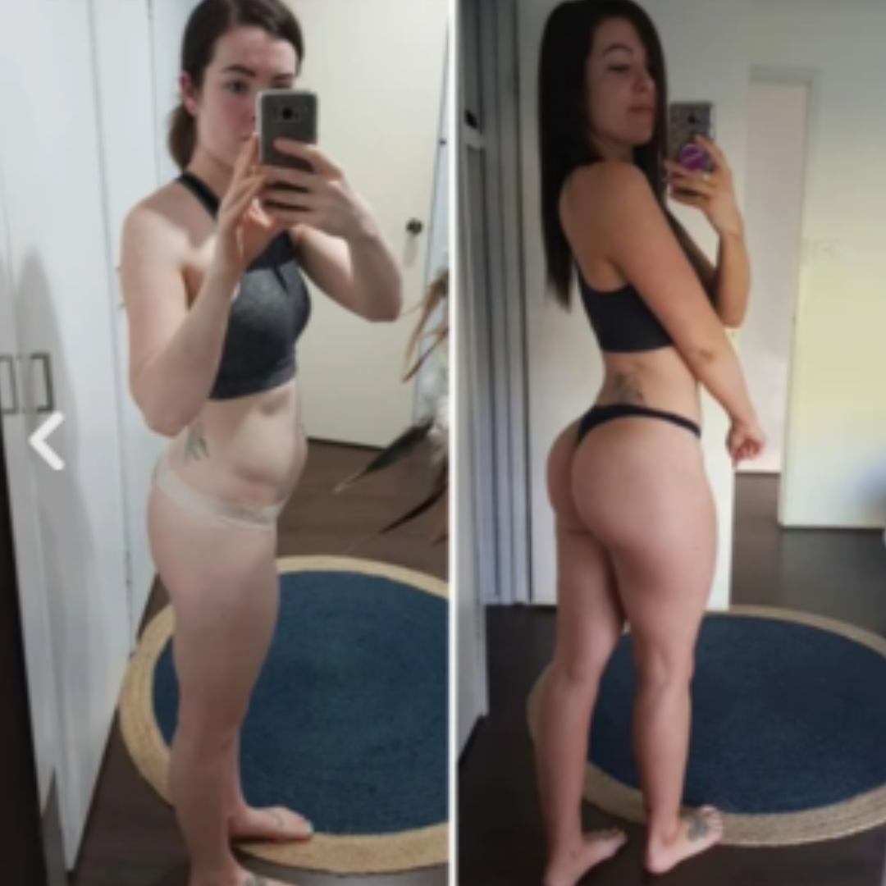

Por favor, verifique se o som está ligado.
Por favor, verifique se o som está ligado.
Programa de emagrecimento completo em até 30 dias
Cronograma completo de alimentação ao longo de 30 dias com receitas deliciosas para perder peso, incluindo dicas valiosas para um estilo de vida saudável e prazeroso com pouco carboidrato. (Valor R$ 297)
Você já tentou emagrecer indo à academia, fazendo dietas, comprando cápsulas ou confiando em métodos mirabolantes que viu na Internet?
Você sabia que em média a cada 10 pessoas que tentam emagrecer, apenas 1 consegue fixar seu peso pelos próximos anos? E isso não é porque algumas pessoas são mais determinadas que as outras.
Existem centenas de formas para te fazer chegar no peso ideal, mas que infelizmente só levam ao efeito sanfona. Porém, aqui está uma boa notícia: você não precisa de procedimentos caros, se matar na academia ou deixar de comer o que você gosta para emagrecer.
Com o Protocolo Zero Barriga, você não vai precisar fazer a metade das coisas que já te passaram para conseguir a transformação que eu tive, isso tudo com uma dieta simples de dar água na boca!
Eu me chamo Manu Camargo e quero te mostrar como fiz para perder mais de 20 quilos em apenas 2 meses, e como qualquer pessoa também pode perder 10 quilos ou mais assim como eu.
Mas, preciso confessar… nem sempre eu soube tudo o que sei sobre emagrecimento. Nos últimos 10 anos, eu sofri com baixa autoestima e fui julgada pelo meu peso. Eu era o tipo de pessoa que começava uma dieta e logo parava ou achava que nada funcionaria para mim.
Mas após uma situação muito constrangedora, eu tomei uma decisão e busquei informação de verdade.
Depois de anos testando na prática diversos métodos milagrosos para emagrecer, eu descobri um “segredo”: um Progrma alimentar simples de 30 dias baseado na dieta Dieta Asiática que vai te ajudar a perder peso e mudar de vida assim como me ajudou.
Programa de emagrecimento
Protocolo Zero Barriga
Dentro do programa você terá acesso ao que realmente é capaz de te fazer perder peso ao longo de 30 dias, com orientações e plano de dieta para perder até 10 quilos em um único mês, e conquistar o corpo que sempre desejou!

Protocolo Zero Barriga
Programa alimentar de 30 dias baseado na Dieta Asiática com toda a orientação necessária para perda de peso rápida e saudável, comendo tudo que você mais gosta.
O que você descobrirá
no programa...
- Como ativar a queima de gordura 24h por dia comendo o que mais gosta, sem precisar contar calorias e perder tempo com balança!
- O verdadeiro vilão que impede sua perda de peso, e como alimentos ricos em gordura e proteínas ajudarão a perder peso mais rápido.
- Porque o aumento e melhora de um processo natural do corpo chamado Cetose, causado pelo Protoclo Zero Barriga, promove a perda de peso tão rápida.
- Receitas fáceis, rápidas e de dar água na boca que aceleram o metabolismo e promovem o aumento da queima de gordura.
Depoimentos de quem já fez o programa
programa Protocolo Zero Barriga
Sofia Mendes
eu nem acredito que depois de tantas tentativas fracasadas. Com esse programa, mudei minha história e conquistei o corpo sonhado. Agradeço!
.webp)
Lucas Oliveira.
Para mim realmente, emagrecer parecia impossível. Com esse programa, transformei minha rotina e conquistei o corpo desejado. Sou grato a você Manu!
Laura Pereira
Após a gravidez, perder peso parecia difícil. Com esse programa, mudei meu abito e conquistei o corpo desejado. to amando me olhar no espelho🥰
Aqui está tudo o que você receberá...
ESPECIAL
3 BÔNUS EXCLUSIVOS

3 Bônus exclusivos (Valor R$ 219,90)
VALOR TOTAL DE R$ 516,90
Tenha acesso ao Programa Protocolo
Zero Barriga + 3 bônus com
60% de desconto hoje!

Perguntas Frequentes
Para se inscrever no programa, basta clicar em um dos botão nessa pagina. preencher o formulário de inscrição online. Após enviar suas informações, você receberá um e-mail de confirmação com mais detalhes sobre o programa.
Cada organismo funciona de uma maneira diferente, por isso, é difícil estipular um tempo exato para o início da perda de peso. No entanto, é comum que as pessoas comecem a notar diferença no peso nas duas primeiras semanas.
Sim, definitivamente! Nosso programa é projetado para atender pessoas de diferentes níveis de condicionamento físico, incluindo iniciantes. Nossos especialistas fornecerão orientações detalhadas e adaptarão os exercícios de acordo com suas necessidades e capacidades individuais.
Sim, oferecemos suporte durante todo o programa. Nossa equipe de especialistas estará disponível para responder a quaisquer perguntas ou preocupações que você possa ter. Além disso, você também terá acesso a uma comunidade online de participantes, onde poderá compartilhar experiências e obter motivação adicional.
Caso você se arrependa da aquisição do programa Protocolo zero Barriga e queria desistir dele, basta entrar em contato com nossa equipe de atendimento, que todos os passos para o cancelamento e a devolução do dinheiro investido lhe serão fornecidos. Mas garantimos que isso será bem difícil de acontecer 🙂

Garantia protocolo
zero Barriga
O código de defesa do consumidor (Art. 49) garante 7 dias para solicitar reembolso em caso de insatisfação com o produto. Porém, nós confiamos tanto em nossos estudos e pesquisas que lhe garantimos 30 dias de garantia incondicional!
Feliiiz demais!!! Obrigada Manu camargo, achava que o método não ia funcionar pq já tinha feito de td pra perder peso, mas msmo assim quis tentar e olha agora estou sendo elogiada por todos!!!
Pra mim essa história de método pra secar sempre foi papo furado, mais nosssa… se soubesse disso antes eu estaria com um corpinho de adolescente a muito mais tempo 😂
Tô de cara com esse negócio! N sabia que realmente ia funcionar, mas tentei porque já não aguentava mais e queria perder uns 5 quilinhos sem deixar de comer besteira kkk. Resultado: menos 2,5kg só na primeira semana!! 🙀
Amando os resultados em pouco tempo, as comidas e o novo estilo de vida que to seguindo!!! Minhas amigas nao param de me perguntar o que eu fiz 😂 Obrigada pelo método!